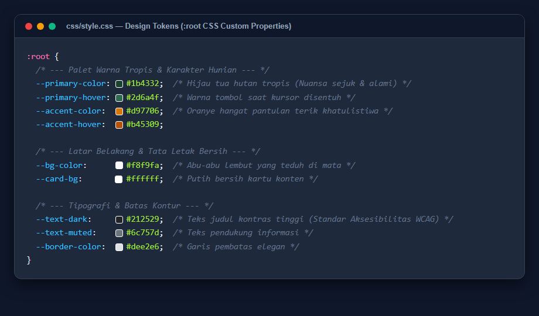
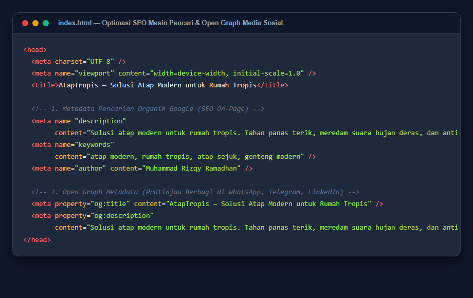
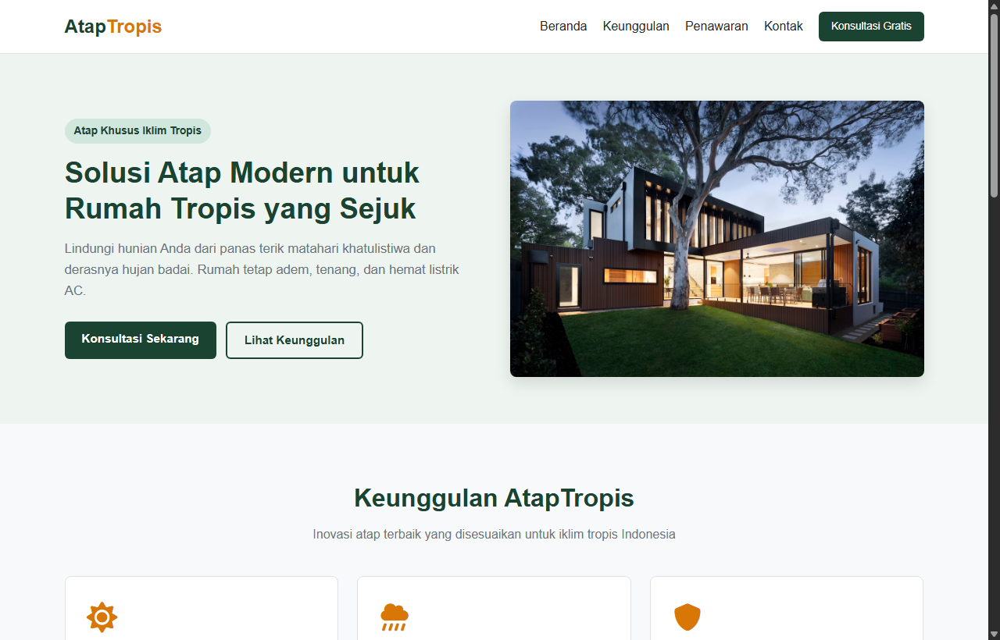
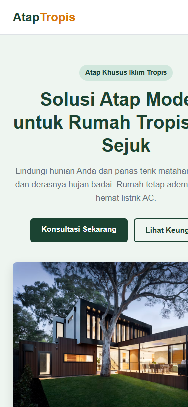

Solusi Atap Modern untuk Rumah Tropis (AtapTropis)
Proyek ini dirancang dengan prinsip arsitektur modular yang bersih (clean code), teratur, dan mudah dipahami oleh siapa pun yang baru belajar pemrograman web. Seluruh berkas dipisahkan secara tegas berdasarkan perannya masing-masing.
Pengembangan proyek memprioritaskan teknologi bawaan peramban (Vanilla Web Standard) tanpa beban pustaka eksternal pihak ketiga agar menghasilkan waktu muat secepat kilat (instant load).
Alih-alih menggunakan elemen <div> secara berlebihan, proyek menggunakan tag semantik baku seperti <header>, <nav>, <section>, dan <footer>. Pendekatan ini meningkatkan keterbacaan kode bagi sesama pengembang serta memudahkan mesin pencari (SEO) mengenali hierarki informasi.
Seluruh identitas desain dikelola secara terpusat pada variabel CSS (CSS Custom Properties):
Di dalam tag <head> disematkan meta description, meta keywords relevan, dan tag Open Graph (og:title, og:description) sehingga tautan website menampilkan kartu pratinjau yang menarik saat dibagikan ke WhatsApp, LinkedIn, atau Twitter.
Logika skrip ditulis di bawah 35 baris. Menggunakan metode event delegation sederhana untuk membuka/menutup menu di HP dan menangkap pengiriman formulir dengan event.preventDefault() guna menampilkan pesan konfirmasi tanpa memuat ulang halaman.
Kendala: Pembuatan awal menghasilkan CSS lebih dari 800 baris dengan animasi melayang yang rumit, sehingga dinilai kurang ramah bagi pelajar pemula.
Solusi: Melakukan perampingan (refactoring) menjadi 389 baris, mengganti animasi berat dengan transisi warna halus (transition: background-color 0.2s) yang tetap elegan namun mudah dipelajari.
Kendala: Gambar foto arsitektur dari Unsplash berisiko gepeng atau keluar batas kontainer saat layar diperkecil.
Solusi: Menggunakan aturan width: 100%; height: auto; display: block; border-radius: 8px; sehingga rasio landscape tetap presisi dan proporsional di segala ukuran layar.
Kendala: Tautan navigasi desktop bertumpuk tidak beraturan di layar ponsel berukuran < 768px.
Solusi: Menggunakan media query @media (max-width: 768px) untuk menyembunyikan navigasi dan menampilkan tombol hamburger (☰). Tautan dibuat berukuran lega agar ramah sentuhan jari.

Keterangan: Variabel :root mengunci palet warna tropis, batas kontur, dan latar belakang secara konsisten di seluruh halaman web.

Keterangan: Tag metadata memastikan website terindeks dengan baik pada hasil pencarian Google serta menghasilkan kartu pratinjau yang rapi saat dibagikan ke media sosial.

Keterangan: Susunan dua kolom berdampingan menyajikan proposisi nilai di sebelah kiri dan foto arsitektur atap rumah tropis di sebelah kanan secara elegan.

Keterangan: Tata letak otomatis menyesuaikan menjadi satu kolom vertikal yang nyaman dibaca dan dioperasikan dengan satu tangan.